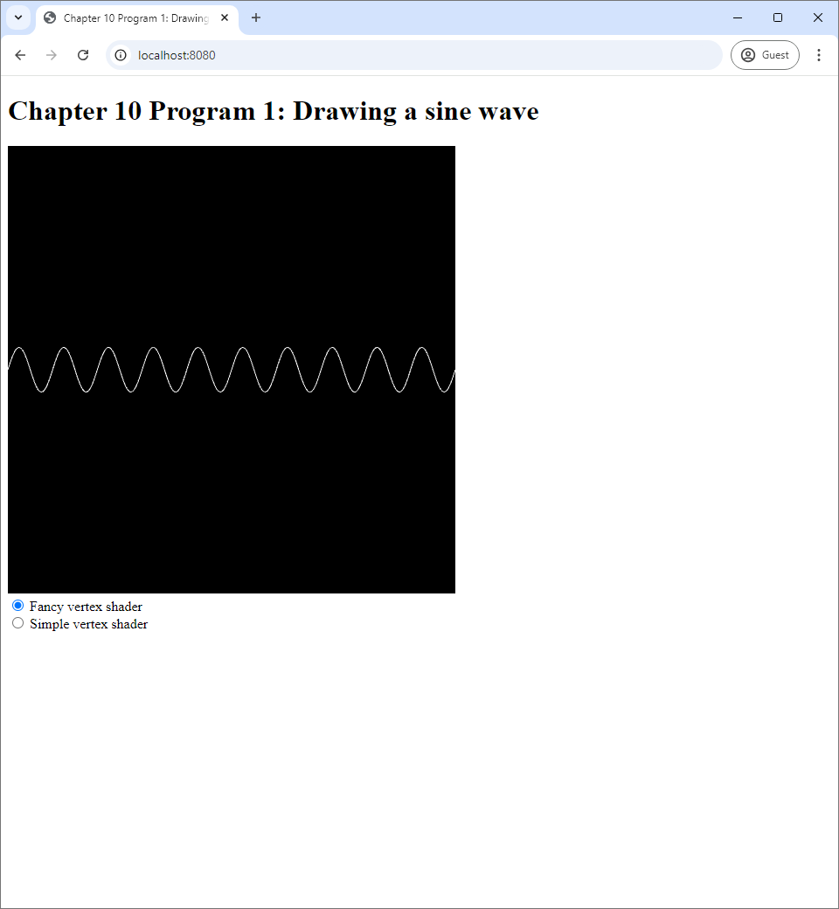
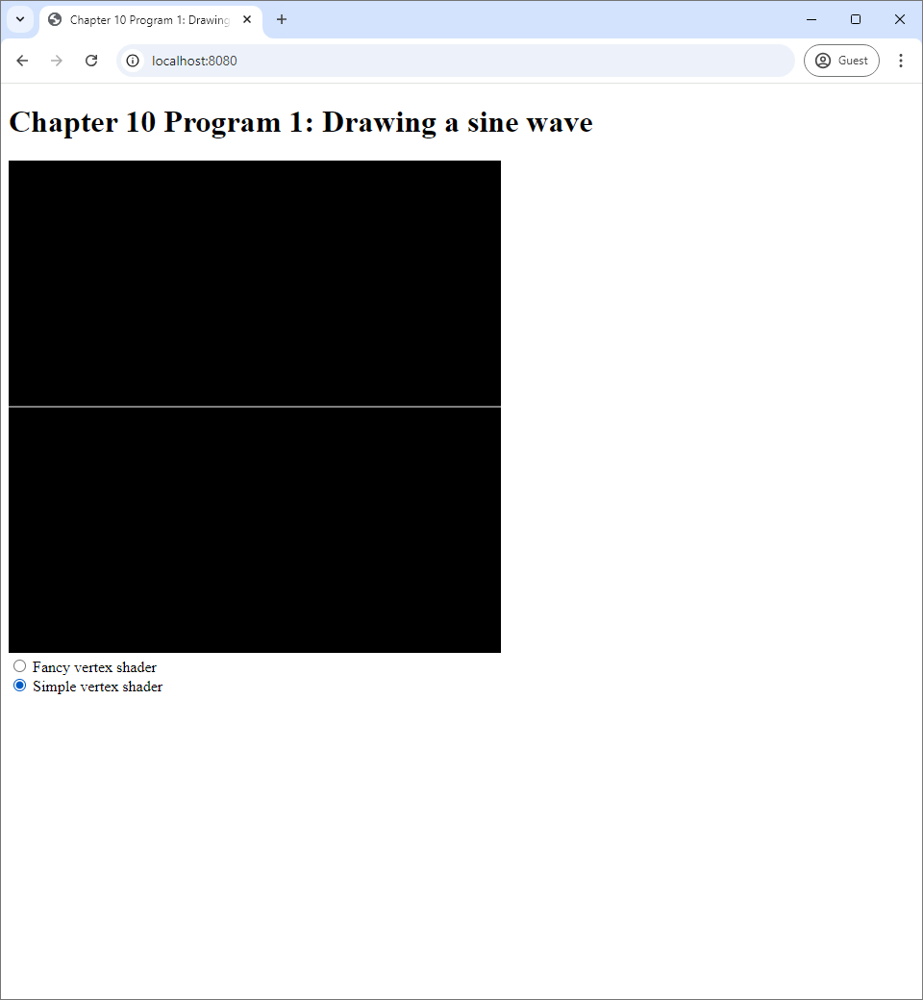
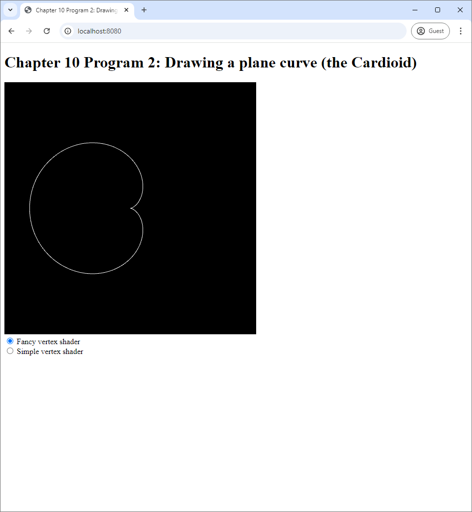
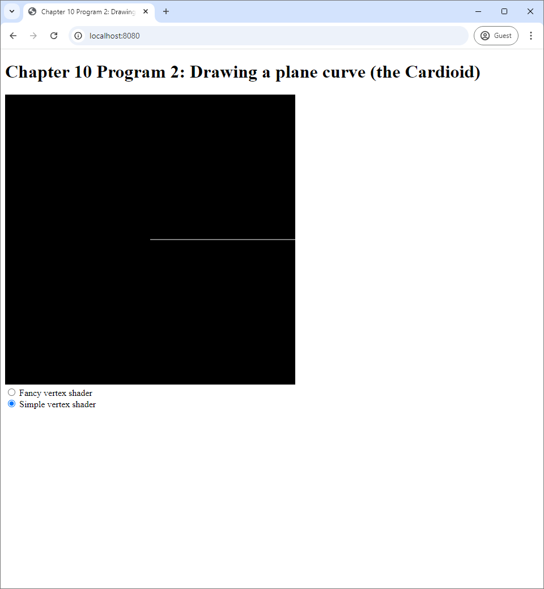
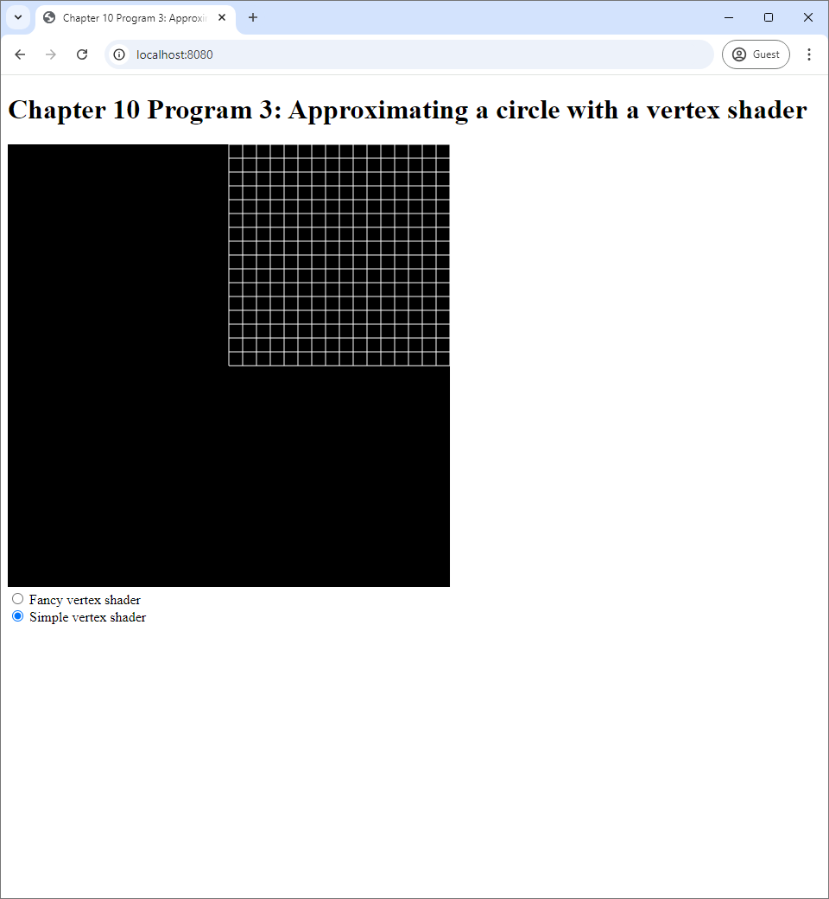

In the past chapters, we have been studying the big picture of graphics programming with WebGL: how to create GLSL programs and shaders (Chapter 8), how to draw primitives (Chapter 9), and the syntax and features of the GLSL programming languages (Chapter 10). The programs we have been studying so far cannot do all that muct. The most they can do is drawing simple primivies such as points, lines, and triangles having a single color. This is in part because their vertex and fragment shaders are very simple.
In this chapter, we focus on the vertex shader and the fancier things we can do with it. Recall from Section 7.3.2 that a vertex shader's main responsibility is to transform vertex attributes into clip space coordinates of the vertices. Because clip space coordinates dictates the shapes that the user see, we can draw more complicated shapes by putting more work into the vertex shaders. The programs in this chaper are examples on how to do exactly this.
The source code of the program is available in the chapter-11/program-01 directory of the source code repoository. Running it, you would see a sine wave on a blank cnavas. Underneath the canvas, there are two radio buttons, one with the label "Fancy vertex shader" and another with the label "Simple vertex shader." When you click on the second radio button, the sine wave becomes a straight line.
|  |  |
| (a) | (b) |
In Chapter 9, we studied vertex shaders that just pass a vertex attribute as its output. The "simple vertex shader" that is emplobyed when the second radio button is clicked is just like one of these shaders. The source code in the vertex-shader-simple.vert file is reproduced below.
#version 300 es
in float t;
void main() {
gl_Position = vec4(t, 0.0, 0.0, 1.0);
}The main difference between the above shader and the ones in Chapter 9 is the vertex attribute. In Chapter 9, the vertex attribute is a vec3 called position. Here, the attribute is a float called t. Because the attribute is different, the Javascript that prepares it is different too. The createBuffers method reads:
createBuffers() {
this.numVertices = 256;
let vertexData = [];
for (let i=0; i<this.numVertices; i++) {
vertexData.push(-1.0 + 2.0*i / (this.numVertices-1));
}
this.vertexBuffer = createVertexBuffer(
this.gl, new Float32Array(vertexData));
let indexData = [];
for (let i=0;i<this.numVertices-1;i++) {
indexData.push(i);
indexData.push(i+1);
}
this.indexBuffer = createIndexBuffer(
this.gl, new Int32Array(indexData));
}We see that the vertex buffer is filled with 256 equally-spaced real numbers from $-1$ to $1$. The index buffer contains $255$ pairs of consecutive indices from $(0,1)$ to $(254,255)$, which means it has $510$ numbers. The buffers are used in the updateWebGL method as follows.
useProgram(this.gl, program, () => {
setupVertexAttribute(
self.gl, program, "t", self.vertexBuffer, 1, 4, 0);
drawElements(
self.gl, self.indexBuffer, self.gl.LINES, (self.numVertices-1)*2, 0);
});The steupVertexAttribute method deals with the attribute variable called "t," which has one component because it is a float and has stride of $4$ because a floating-point number is represented by 4 bytes. The drawElements function draws LINES primitives using $255 * 2 = 510$ elements in the index buffer, thus using everything inside and resulting in 255 line segments. The simple vertex shader in Listing 11.1 transforms attribute $t$ into clip space coordinates $(t,0,0,1)$. As a result, we get a straight line segment that goes from the $xy$-coordinates of $(-1,0)$ to $(1,0)$, and so we see a horizontal line in Figure 11.1(b) when the simple shader is used.
The "fancy vertex shader" uses the exact same vertex data as the simple shader but transform them so that we get a sine wave instead of a straight horizontal line. Its source code in the vertex-shader-fancy.vert reads:
#version 300 es
const float PI = 3.14159265359;
in float t;
void main() {
gl_Position = vec4(t, 0.1*sin(2.0*5.0*PI*t), 0.0, 1.0);
}The shader uses a GLSL feature we did not cover in the last chapter: the const keyword. It can be added in front of a variable declaration such as float PI = 3.14159265359; to make sure that the value of the variable remains constant, i.e. unchanged, during the scope of the program. It is especially useful in the case where we need a name for well-known mathematical constants such as $\pi$ and $e$. Unfortunately, GLSL does not have them defined as a part of the language, so we have to code them ourselves when needed.
It also uses another undiscussed feature: the function sin, which computes the sine function from trigonometry. This function is one of GLSL's built-in functions that comes automatically with the language itself. The list of built-in functions can be found in the GLSL ES 3.0 reference card, and it has a lot of well-known mathematical functions that can also be found in C's math.h library such as abs, pow, exp, sqrt, log, cos, tan, asin, acos, and atan2.
From the code, we see that the shader transforms $t$ into clip space coordinate $$(t, 0.1 \sin (10\pi t), 0, 1),$$ which means that the $x$- and $y$-coordinates of the output is given by: \begin{align*} x &= t, \\ y &= 0.1 \sin(2\pi \times 5 \times t) = 0.1 \sin(2\pi \times 5 \times x). \end{align*} In other words, we are plotting the graph $y = 0.1 \sin(2\pi \times 5 \times x)$, which is a sine wave of amplitude $0.1$ and period of $1 / 5 = 0.2$ from $x = -1$ to $x = 1$. Because the screen's range of $x$-coordinates is from $-1$ to $1$, we see exactly $((1 - (-1)) / 0.2) = 10$ repetitions of the sine wave form.
The fancy vertex shader demonstrates that we can draw curves by transforming vertex data appropriately. By rewriting the fancy vertex shader appropriately, we can draw any functions of the form $y = f(x)$ that we can code into GLSL.
In this sample program, we show that we can use the vertex shader to draw parametric curves of the form \begin{align*} \begin{bmatrix} x \\ y \end{bmatrix} = \begin{bmatrix} f(t) \\ g(t) \end{bmatrix} \end{align*} where $y$ is not directly related to $x$. Many curves such as circles and ellipses are of this form. Program 2 draws a curved called the "cardioid:" \begin{align*} \begin{bmatrix} x \\ y \end{bmatrix} &= \begin{bmatrix} 2r \big(1 - \cos (2\pi t)\big) \cos (2\pi t) \\ 2r \big(1 - \cos (2\pi t)\big) \sin (2\pi t) \end{bmatrix} \end{align*} where $t \in [0, 1]$, and $r$ is the "size" of the curve, which controls how large the curve is. We can see what it looks like in Program 2's screenshots.
|  |  |
| (a) | (b) |
Like Program 1, Program 2 draws LINES primitives and has two vertex shaders, the simple and the fancy ones. The simple one, located in vertex-shader-simple.vert is exactly the same as that of Program 1. However, it draws a slightly different picture because the vertex data are prepared differently. The createBuffers function of the WebGLApp class contains the snippet:
let vertexData = [];
for (let i=0; i<this.numVertices; i++) {
vertexData.push(1.0 * i / (this.numVertices-1));
}
this.vertexBuffer = createVertexBuffer(is.gl, new Float32Array(vertexData));This means that the vertex data contains 256 number s from $0$ to $1$ instead of the same numbers from $-1$ to $1$ like in Program 1. As a result, what you see is a horizontal straight line that occupies only the right half of the screen, which corresponds the range where $0 \leq x \leq 1$, instead of a horizontal line that occupies the whole width.
The fancy vertex shader, located in vertex-shader-fancy.vert, simply calculates the $x$- and $y$-coordinates according to the formula of the cardioid curve.
#version 300 es
const float PI = 3.14159265359;
in float t;
void main() {
float theta = 2.0 * PI * t;
float x = 2.0 * 0.2 * (1.0 - cos(theta)) * cos(theta);
float y = 2.0 * 0.2 * (1.0 - cos(theta)) * sin(theta);
gl_Position = vec4(x, y, 0.0, 1.0);
}We can see that the vertex shader uses $a = 0.2$, and this results in the cardioid being of the size you see in Figure 11.2(a). To make the program brief, we define the variable theta to store the value $2\pi t$, and the rest of the code is straightforward.
In the last program for this chapter, we will how we can use a vertex shader to transform a mesh from a square to a circle. The resulting circle can be seen in Figure 11.3(a). It is not a result of preparing a mesh whose vertex positions form a circular shape, but it is the result of rendering the square mesh in Figure 11.3(b) and having the vertex shader transforming the vertex positions so that they form a circle instead.
|  | |
| (a) | (b) |
The first thing to study is how the square mesh is prepared. This is in the createBuffers method of the WebGLApp class in Program 3's index.js file. The method has two parts: the first part prepares the vertex buffer, and the second part prepares the index buffer. The method is quite long, so we summarize it, commenting out the long for loops below.
createBuffers() {
let N = 17;
this.numVertices = N * N;
let vertexData = [];
/***** Prepare vertexData. *****/
this.vertexBuffer = createVertexBuffer(
this.gl, new Float32Array(vertexData));
this.numEdges = 0;
let indexData = [];
/***** Prepare indexData. *****/
this.indexBuffer = createIndexBuffer(
this.gl, new Int32Array(indexData));
}
We see in Figure 11(b) that the square mesh is actually divided into $16 \times 16$ smaller squares, so its width and its height are divided into 16 equal intervals. If you divide an interval into 16 subintervals, you need 17 distinct points to mark the starts and the ends of the intervals. Setting the variable N to $17$ reflects this fact. This also means that, in order to create a $16 \times 16$ wireframe, we need $17 \times 17 = N \times N$ vertices, and this is reflected in setting this.numVertices = N * N. The code that is abbreviated as /***** Prepare vertexData. *****/ is reproduced below.
for (let i = 0; i < N; i++) {
let y = i * 1.0 / (N - 1);
for (let j = 0; j < N; j++) {
let x = j * 1.0 / (N - 1);
vertexData.push(x);
vertexData.push(y);
}
}We have two-level for loops where the first level iterates through $17$ $y$-coordinate values: $\frac{0}{16}, \frac{1}{16}, \cdots, \frac{16}{16}$. For each of these $y$-coordinate value, the second-level for loop iterates through $17$ $x$-coordinate values: again, $\frac{0}{16}, \frac{1}{16}, \cdots, \frac{16}{16}$. Then, for each of these $x$-coordinate and $y$-coordinate value pairs, the coordinates are inserted into vertexData in that order, forming a complete vertex.
A few lines below this for loop, we create the index buffer, and we need to identify the vertices by their indices, i.e., the order they were inserted into vertexData if we were to start counting from $0$. We have that the vertex on the $i$th row (starting from $0$) from below and $j$th column (again, starting from $0$) from the left has index $iN + j$. This is a result of (1) inserting the vertices from bottom to top and left to right and (2) each row having $N$ vertices. The layout of the vertex indices are as follows.
The next section of the method creates the index buffer. As we can see in the screenshots in Figure 11.3, Program 3 draws line segments, and it uses the LINES primtives to do so. A line segment that connects two vertices are often called an "edge." The numEdges field is supposed to store the number of edges for later reference. It is initialized to zero, and we will increment it as we add an edge to the index buffer in the for loop that follows. After initializing numEdges, we initialize the array indexData that serves as a temporary storage for vertex indices before they will be transfered to the GPU.
The most complicated part of the createBuffers method is the second nested for loops, which populates the indexData with vertex indices that form edges of the mesh we see in Figure 11.3(b). The mesh is made of $16 \times 16 = 256$ squares. Because each square 4 sides, and each side is an edge that connects two vertices, we will be adding $16 \times 16 \times 4 \times 2 = 2048$ vertex indices to indexData. We process the squares from bottom to top and left to right. Here, the counter i represents the index of the row, and the counter j indicates the index of the column.
for (let i = 0; i < N - 1; i++) {
for (let j = 0; j < N - 1; j++) {
< Body of the 2nd for loop. ≷
}
}In the body of the 2nd for loop, we first calculate 4 vertex indices: i00, i01, i10, and i11. The character i is a shorthand for "index." The second character in the name reflects whether $1$ is added to i in the calculation or not, and the second number reflects whether $1$ is added to j.
let i00 = i * N + j;
let i10 = i * N + (j + 1);
let i11 = (i + 1) * N + (j + 1);
let i01 = (i + 1) * N + j;
The indices are calculate in such a way that they correspond to the indices of the four vertices of the square that are on the $i$th (zero-based) row from the bottom and the $j$th (zero-based) column from the left.
Then, we add 4 edges to indexData.
indexData.push(i00);
indexData.push(i01);
indexData.push(i01);
indexData.push(i11);
indexData.push(i11);
indexData.push(i10);
indexData.push(i10);
indexData.push(i00);The edges the bottom, right, top, and left edge of the squares, respectively.
indexData in the body of the 2nd for loop.After we add the vertex indices, we update the numEdges field by adding 4 to it. The next command then creates an index buffer out of the array, and this complete our prepartion of the index buffer.
As usual, the mesh is drawn in the updateWebGL method. However, this time, a vertex's data consists of 2 numbers, so we need to the arguments to the setupVertexAttribute function appropriately. We also use the numEdges field to compute the number of vertices in the index buffer.
useProgram(this.gl, program, () => {
setupVertexAttribute(self.gl, program, "position", self.vertexBuffer, 2, 2 * 4, 0);
drawElements(self.gl, self.indexBuffer, self.gl.LINES, self.numEdges * 2, 0);
});The vertex shader used to draw the mesh is chosen according to the radio button. The simple vertex shader is, again, located in the vertex-shader-simple.vert, and it reads:
#version 300 es
in vec2 position;
void main() {
gl_Position = vec4(position, 0.0, 1.0);
}The shader simply copies the vertex data to the first two components of the output clip space coordinates. This results in the square mesh in Figure 11.3(b) because the vertex buffer and the index buffer were prepared so yield such a result.
The intesting thing about Program 3 is that, when the fancy shader is used, the square becomes as circle without the need to alter the underlying mesh data. The source code of the fancy shader is located in vertex-shader-fancy.vert, and we reproduce it below.
#version 300 es
const float PI = 3.14159265359;
in vec2 position;
void main() {
float s = position.s;
float t = position.t;
float r = sqrt(s) * 0.8;
float x = r * cos(2.0 * PI * t);
float y = r * sin(2.0 * PI * t);
gl_Position = vec4(x, y, 0.0, 1.0);
}We see that the shader first reads the vertex position's first and second coordinates into the s and t variables, respectively. It then transforms the coordinates $(s,t)$ into $(x,y)$ as follows:
We can see that we convert $t$, which has values in the interval $[0,1]$, into an angle $2 \pi t$, which has value in the range $[0,2\pi]$. The shape of the circle comes from the fact that the $x$-coordinate contains $\cos(2\pi t)$ and that the $y$-coordinate contains $\sin(2\pi t)$. We then use the angle $2\pi t$ to compute the $x$- and $y$-coordinates of the unit circle: $\big( \cos(2\pi t), \sin(2\pi t) \big)$. Next, we scale the unit circle coordinates with the radius $0.8 \sqrt{s}$ to calculate $(x,y)$. Because there are $17$ different values for $s$ in the range $[0,1]$, we end up creating $17$ levels of circles whose radii range from $0$ to $0.8$. We then copy $(x,y)$ into the first two components of the output clip space coordinates in the last line of the main function. As a result, the square in Figure 11.3(b) becomes the circle in Figure 11.3(a).
{kind=link}
{kind=link}
{kind=link}
{kind=link}
{kind=link}
{kind=link}
{kind=link}
{kind=link}
{kind=link}